Writings
Samples of Upcoming Works: The Brave Rooster
 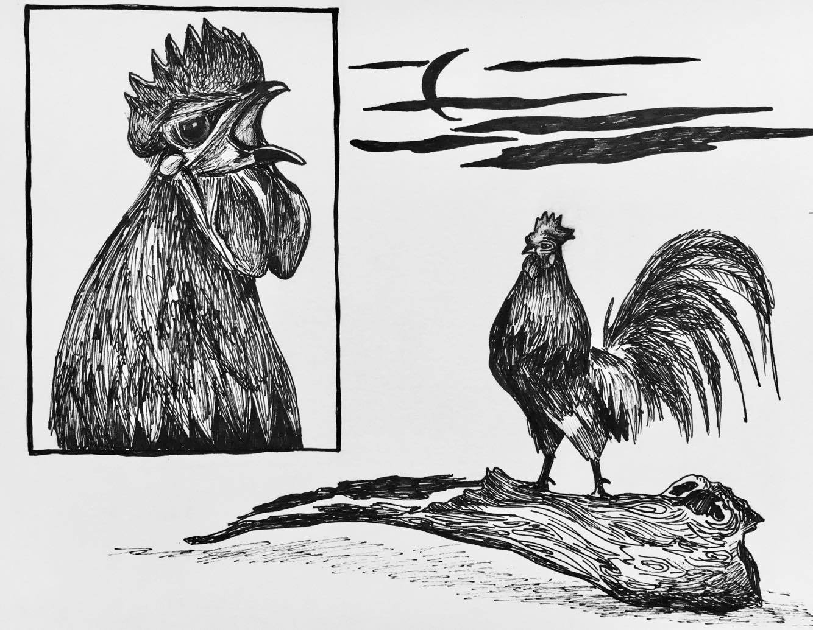
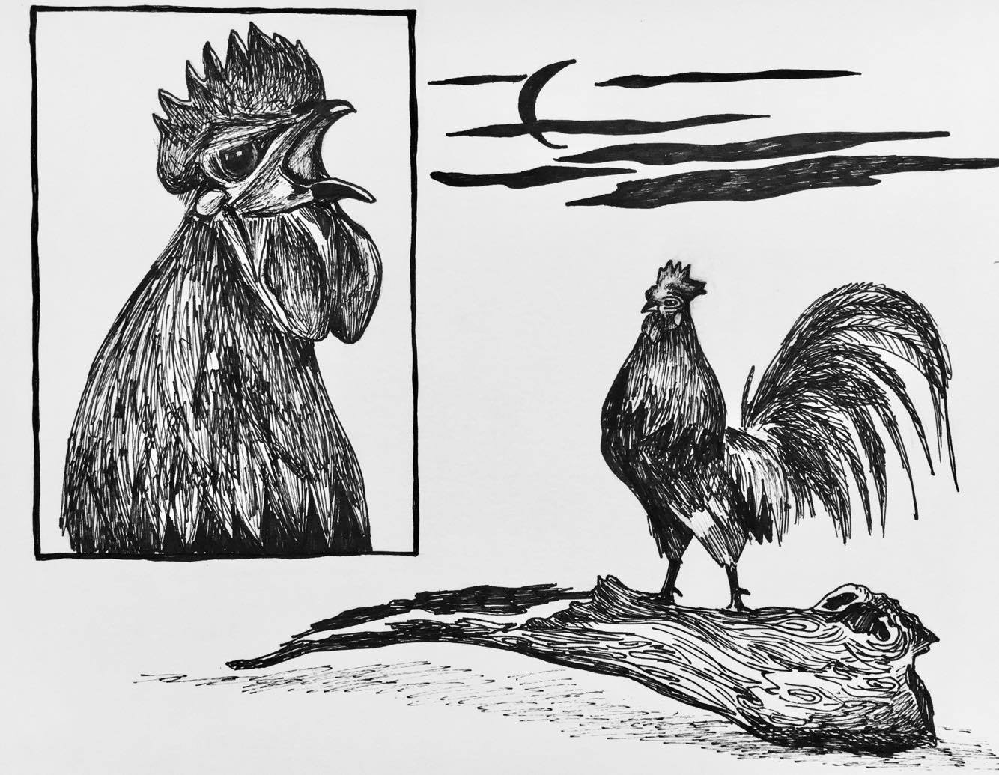
Chapter 1
“Er-er-Er-ERRRR! Er-er-Er-ERRRR! Er-er-Er-ERRRR!” The distinct crow of a powerful rooster breaks through the stillness in a village. A sliver of moon peeks through thin clouds above Lao Kai’s crown when he jumps awake from a sudden disturbance. The morning air is crisp, clean, and refreshing high in the mountains. His needle-sharp talons grasp firmly onto an old tree stump as the onset of morning approaches.
Upon hearing Papa’s daily morning crows, Lao Kai feels a deep happiness and reassurance knowing the familiarity of life in his village. For a second, he sees himself like Papa as a Village Rooster, but the idea disappears quickly. It is too much of a responsibility for him to carry on his young shoulders. Feeling a bit chilled by his own thoughts, Lao Kai looks at the chicken house. He sees Papa standing proudly erect like a tree, holding his head high to give another waking call to villagers and Yer Shao’s creatures for a new day to begin.
“Er-er-Er-ERRRR! Er-er-Er-ERRRR! Er-er-Er-ERRRR!” Papa crows once more. A gentle breeze combs through Lao Kai’s golden-orange neck feathers. His deep-red crown sits majestically on top of his head. Dark-metallic green tail feathers rock to his tensing body. How can he live up to Papa’s crow each morning? His ear splitting voice can rouse even the sleepiest creatures. Lao Kai feels a little ashamed knowing he is expected to be like Papa when that day comes.
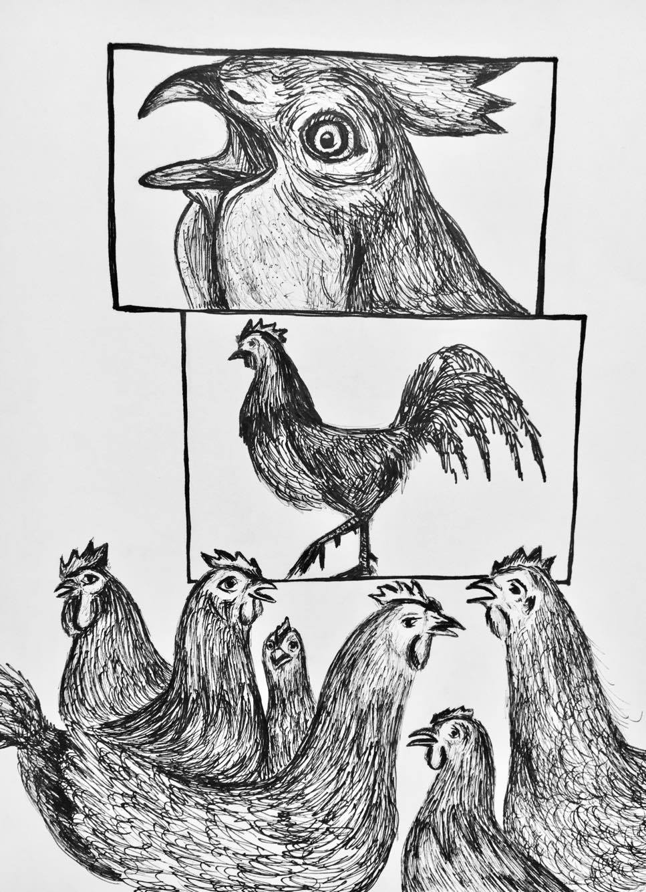All of Lao Kai’s life, he feels safe knowing Papa will take care of him and his village. As a respected leader, Papa settles disputes as judge, serves as marriage negotiator between families, and treats illnesses as a sha-rooster. Chickens listen to his wisdom, heed his advice, and are even scared of him. Lao Kai cannot command such respect or authority. After taking a great gulp of air, his heart feels heavy like it is fill with stones.
This particular morning is strangely quiet, as if a dark ominous cloud hangs over their village. Lao Kai continues on with his day marching over to see friends and cousins. Together, they roam around digging for worms and cleaning up fallen grains with their beaks. He is carefree, light-hearted being with people he loves. Later in the day, the sweet smell of rain permeates the air as dusk arrives. To his alarm, a commotion is gathering near the village edge.
Running with an ocean of chickens toward the noise, Lao Kai sees Papa blocking a path toward his village. He feels anxious, yet, an excitement is blooming inside of him.
“Leave now! You are not welcome here. If you come any closer, you will pay!” Papa shouts at the intruder. This fearless intruder has a wild look in his eyes like he intends to harm Papa. Everyone knows he wants to take over the village as a new leader if he defeats Papa. Papa is the only one strong enough to prevent this from happening.
“I can be here if I want. What are you going to do about it?” retorts the cocky rooster.
Watching timidly from behind a tree, Lao Kai is terrified. His heart pounds in his ears as the world turns silent before him. He has never seen Papa this angry. It must be serious! With neck feathers fanning out, Papa appears bigger and scarier. His wings start to flap with immense force as if he can take flight at any second. Lao Kai is astonished at how magnificent Papa is as he stand his ground to defend their beloved village.
The other rooster’s flaring neck feathers make him seem as fierce and deadly as Papa. In little time, two roosters duel with spurred talons like swords clashing. Both jump, snap in mid-air until Papa strikes his opponent in the head. The cocky rooster falls down in defeat. Lao Kai exhales in gratitude. When Papa regains his breath, he stands above a heap of feathers.
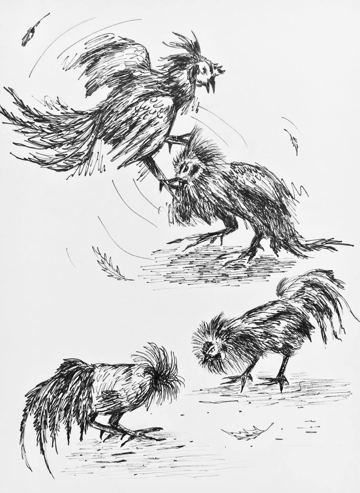“Don’t let me see your face ever again. Leave my village. NOW!” Papa squawks. The beaten rooster gets up gingerly as blood drips down his two robust legs. He saunters slowly into jungle where he is swallowed by trees and bushes. After watching Papa single-handedly vanquish a threat, Lao Kai has a new appreciation for his Village Rooster. Lao Kai is silent as he watches Papa walk amongst chickens who congratulate him on his victory.
After all the excitement, Lao Kai is satisfied with peace and quiet. Sitting still on his stump brings clarity to his mind and helps calm his racing thoughts. While sitting and thinking, he simply cannot escape thoughts that travel through his mind. He must face them and come to an agreeable solution in his mind before moving on. A big part of him knows he cannot escape a life he has been preparing for since childhood. Then another piece wants him to take charge of his own destiny. What am I meant to do? When he thinks like this, he scares himself at wanting something different than what he grew up knowing. To him, the elders represent a past, which exists in a different form than what he will become, a future. He is disconnected from the past and has a hard time imagining the future because he does not know himself well enough to understand. A lonely feeling sweeps across his heart, making him feel lonesome, even when surrounding by family and friends. For now, he sits still focusing on his breathing as he tries to live in the present. He closes his eyes, tries not to judge the anger, fear, and other emotions passing through him. His “now” state of mind is letting go of his thoughts, as he floats lightly in clouds without effort. After his long undisturbed thinking, he realizes he cannot escape the Village Rooster Selection Day.
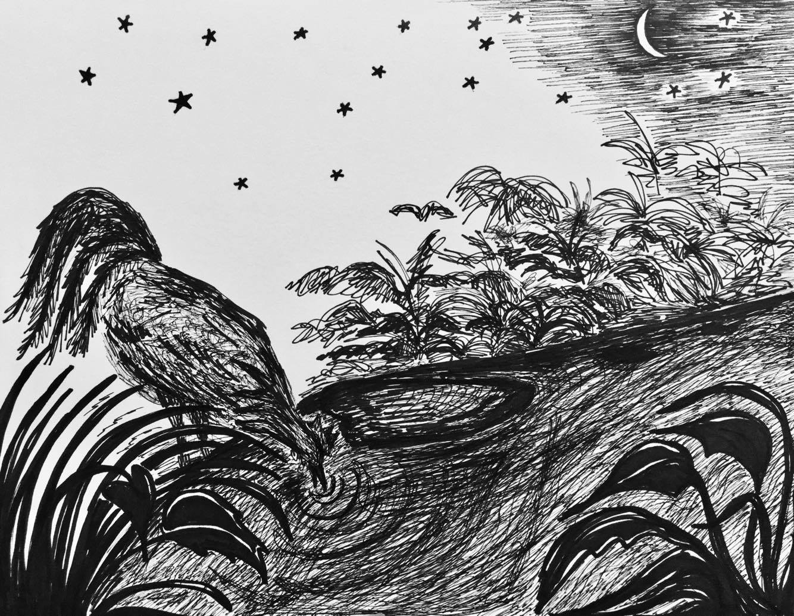The Village Rooster Selection Day is a community event where all village chickens come out to the center of town to witness the choosing of a new Village Rooster. Lao Kai is overwhelmed with mixed emotions as if he is a coward unlike his brave Papa. Should he do his best at this event or just do enough to say that he did it? He knows what to do by heart so he cannot pretend to perform poorly. Each contending rooster is to crow three times in front of the judging Elder Roosters and crowds. As he waits for his turn, Lao Kai takes swallows after swallows of air in order to avoid the tightness in his throat.
Sunlight appears behind mountains as he watches one rooster crow after another. When it is his turn, Lao Kai stands tall, head high facing endless sky, and gives his best imitation of Papa’s crows. The crowd roars in delight, Elders nod their approval, and his parents beam with satisfaction. What is it about the Elders that makes Lao Kai cringe with fear? Is it their air of arrogance? Does being older mean they know everything? He tries hard not to think about his outcome. When the results come in, it is not a surprise at all that Lao Kai is everyone’s choice.
“You have been chosen anonymously to be our next Village Rooster. You should be pleased, Lao Kai,” informs Eldest Rooster. Lao Kai is duty bound to accept this role graciously or Papa loses face for not properly raising a good son. If he refuses, his family’s reputation is ruined, making him an outcast for the rest of his days. When everyone gazes expectantly at him to speak, he sees himself standing before two paths that determines his future. He feels tangled between doing what others want and creating his own way in life. Choosing Papa’s world means he is receiving the Elders’ way by becoming the next village leader. If Lao Kai seeks his own journey, then he may be ostracized by those he loves. What must he do?
Running away and hiding from everyone is all Lao Kai wants to do at this present moment. His face turns red with embarrassment at the thought.
“I accept this honor, Elders,” he says carefully. “Thank you for the opportunity to serve. I shall do my best to protect this village.” Papa’s gratifying smile spreads across his beak when Lao Kai utters these noble words.
After Village Selection Day, Lao Kai sits calmly on his favorite stump as thoughts drift in and out of his mind. Growing up, chicks and cockerels are taught to never leave their village.
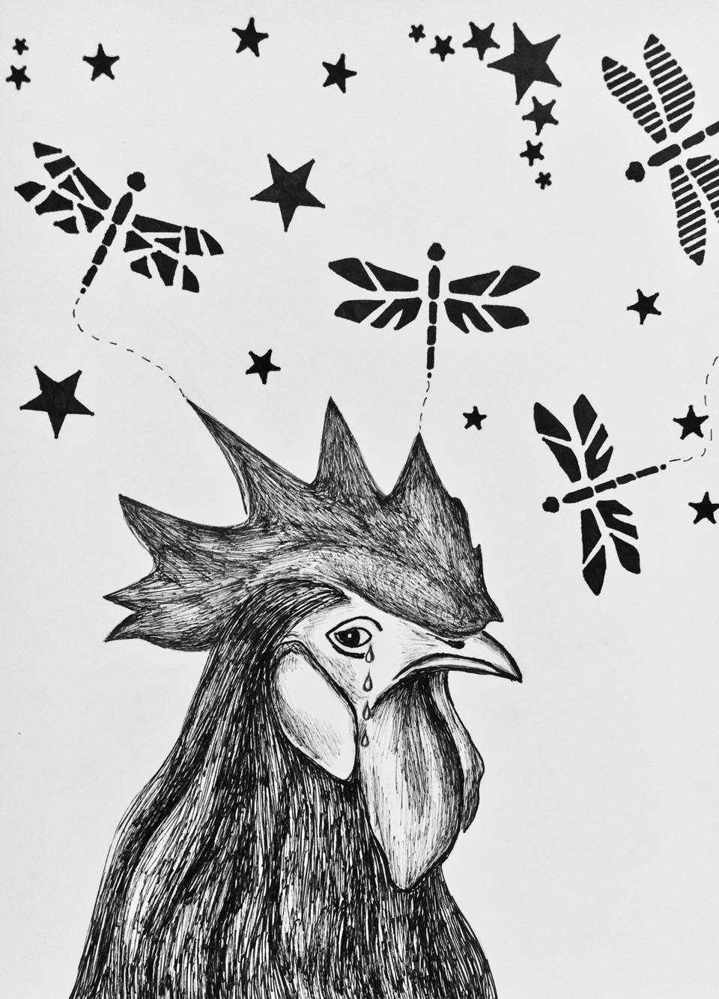“If you leave, something is going to get you. You will never see us again,” Mama Hen warned him multiple times when he was young. “Catastrophic events will surely happen to you if you leave the safety of your home. Stay with us.” Other adults share the same words of wisdom with their young whenever they feel a need to remind them to stay together. Are these fears just inventions to get the young to behave? Everyone, young and old, understands other unspoken rules that whoever chooses to leave the comforts of their home will not be welcomed back to join family or society. These “rebels” have rejected their natural rights to be with the group. They are taught that being alone brings little happiness or joy. Being together in a family is stronger. No matter what happens, family should always stay together, because a handful of sticks is harder to snap when compared to breaking one one stick by itself. Lao Kai agrees with the idea, only his heart is beating in multiple directions, and it has its own mind of seeing the world.
Each time Lao Kai begins to seriously think about his future, he comes to the same conclusion in his heart. Having status and prestige means little to him. Time, independence, and family are more valuable to him than anything. He just cannot stop sensing a calling for him to go find himself in this big world so he can finally find a place to belong. If he is meant to be a leader, in time he will gladly return to fulfill his destiny.
Sighing in frustration, Lao Kai wants more than to simply exist, follow orders, or wait for others to make decisions for him. For the first time, thoughts of having to choose between family loyalty or following his heart make him more upset. Growing up is confusing enough and Lao Kai does not want to choose between two worlds. He needs to find a way to shake off his unhappiness because a thick fog is clouding his mind.
Lao Kai leaps from his old stump. A tornado of dust puffs around him as he aggressively attacks, claws the ground beneath with his talons in a storm of rage. Releasing tension, his head feels clearer, his heart less heavy.
To be continued . . .
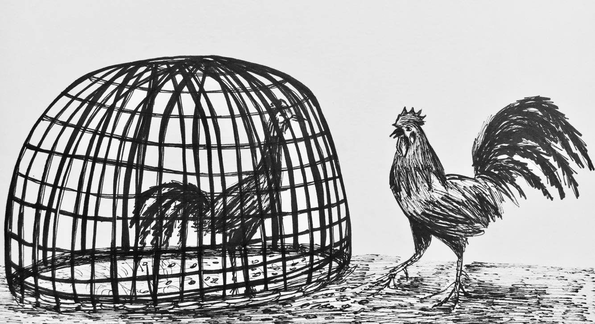 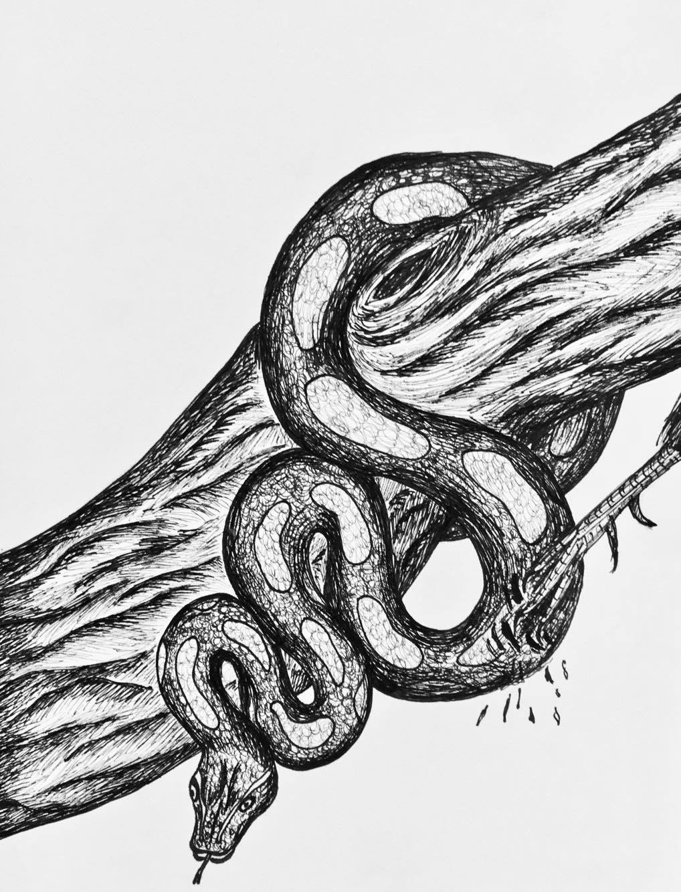 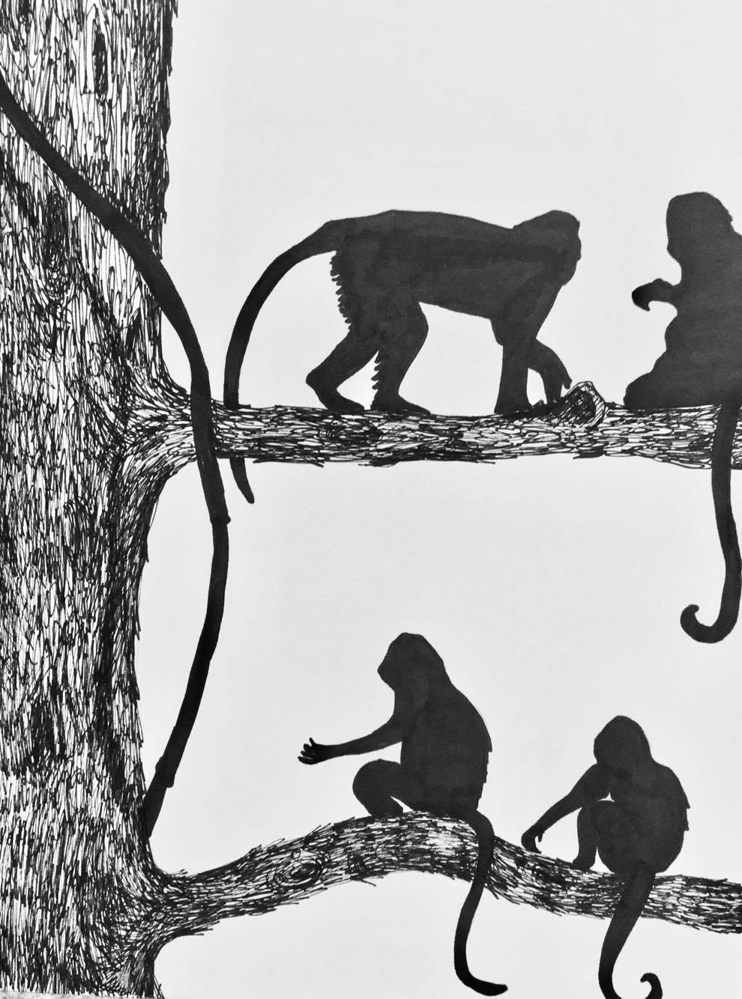 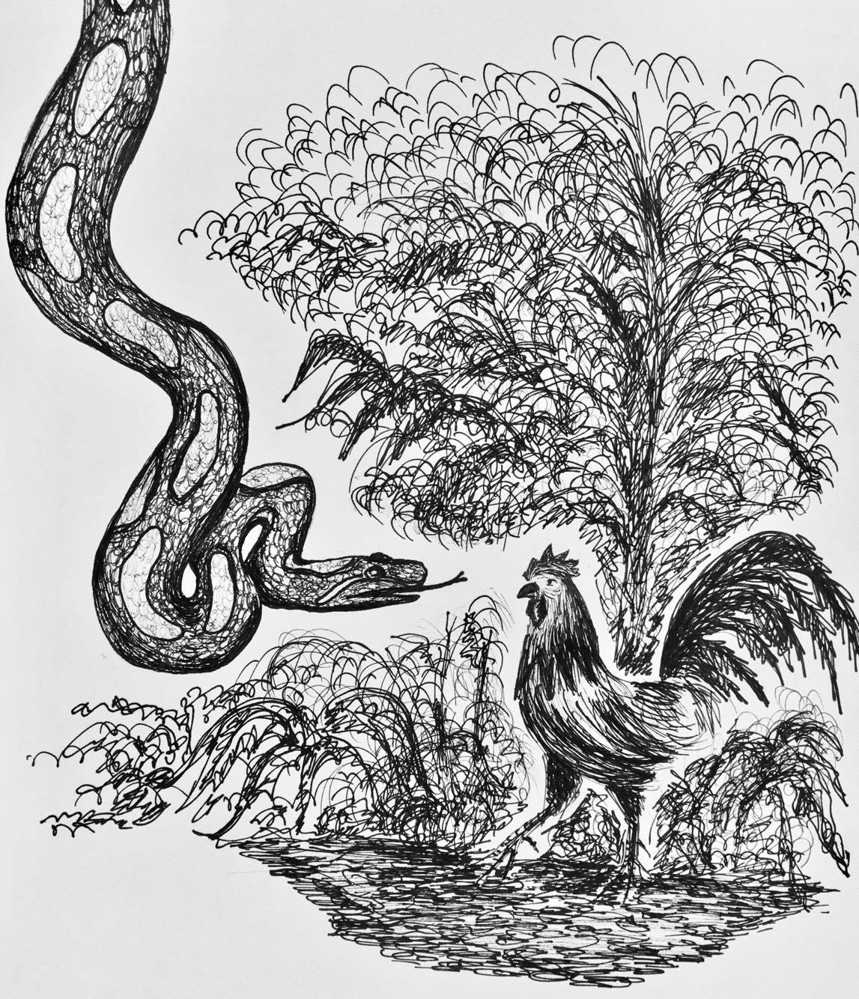
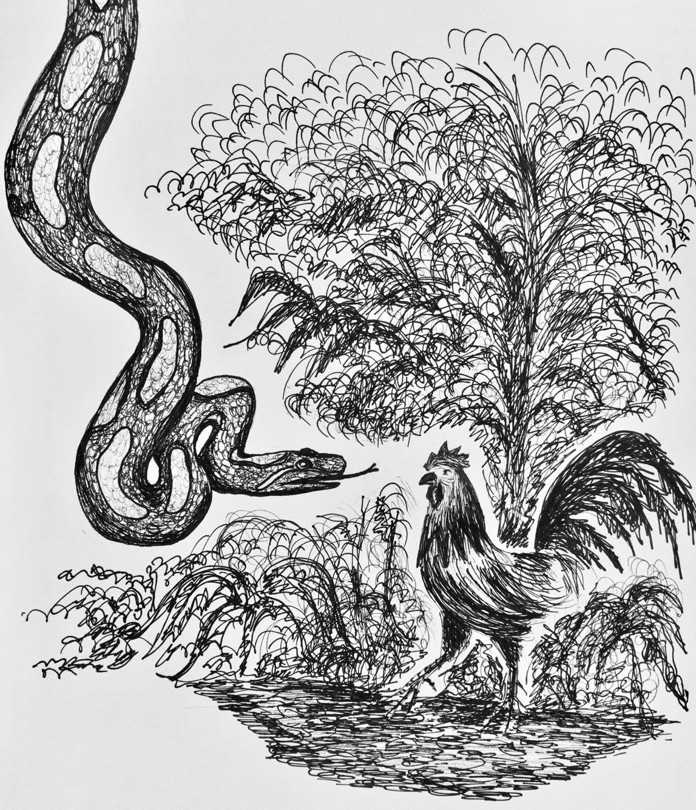
Poetry
Filter by:
Two Rivers
Mississippi, oh, Mississippi,
timeless beauty,
you have carried countless stories
without judgement.
Your serene wisdom
inspires curiosity in young and old.
Today,
I sit before you as he asks for my hand,
how can I not accept such a kind-hearted man to be mine?
When his West melts into my East,
we become stronger as one.
Mississippi, oh, Mississippi,
you have done it again,
witnessing a new history
with prudence.
Watching your heartbeat,
in front of
“A Simpler Time”
overlooking the Julia Belle Swain,
I think of Mother.
Back then,
she once sat before the Mekong,
10,000 miles away.
Death asking for her hand,
how can she accept to go at such a young age?
When escaping certain death becomes a second chance,
she grows stronger with others.
Mekong, oh, Mekong,
you have done it again,
witnessing a new history
with prudence.
Watching your heartbeat,
in front of
fear
overlooking “The Land of Smiles.”
She thinks of her future.
Two daughters
before
two rivers.
Each with hopes and dreams,
like the moon and the sun
intertwining as one.
Mekong, oh, Mekong.
Mississippi, oh, Mississippi.
Two daughters
standing before the shores of the past,
the crossroads of the present
by two rivers.
Copyright @ Mai Chao, 2/24/2017
MO
Mo,
who is Mo?
Perhaps a brunette
or
a blond,
who loves to run.
Mo,
on the front of a white letter jacket,
fits crisp against my black ponytail.
Monogramed Mo,
track shoe wings, yellow timberwolf,
traces of another girl.
Mo,
her kind mother
gives a piece of Mo to me.
A daughter from another mother,
who wants to run like her Mo.
Running season is over,
proudly I wear Mo.
Watching frozen ice on the Mississippi
with a boy,
I see silhouettes of Mo
walking towards me.
My hand covers monogramed Mo.
Black hair girl cannot be Mo.
Feeling embarrassed for wearing Mo,
I hide behind the boy as
shadows pass by.
My shame evaporates,
slowly.
Mo and I,
two daughters loved by
a mom, teacher, believer.
The white letter jacket,
our shared casing,
one day
metamorphosizing into butterflies.
Still,
the frozen ice on
the Mississippi
stirs a deep longing of when.
When
will I be my own Mo?
Mo,
who is Mo?
Me,
who am I?
Copyright @ Mai Chao, 2/24/2017